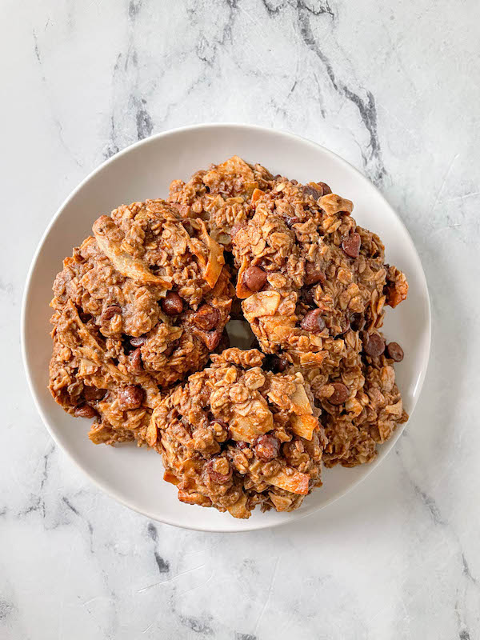

Coffee Coconut Breakfast Cookies

Description
A chewy breakfast cookie inspired by coffee and coconut flavors. Enjoy with your morning brew!
Ingredients
- 3 TBSP brewed coffee
- 1.5 cup old fashioned oats
- 1/2 cup whole wheat flour
- 1/2 tsp baking powder
- 1/2 tsp cinnamon
- 1 TBSP chia seeds (optional)
- 1 TBSP flaxseed (optional)
- 1 egg
- 1/2 cup canned coconut milk
- 1/4 cup almond butter (sub nut butter of choice)
- 1/4 cup maple syrup (sub agave or honey)
- 1 cup coconut flakes (unsweetened)
- 1/2 cup chocolate chips (optional)
Steps
- Preheat your oven to 350 F (175 C) and prepare a baking sheet with foil, parchment, or a silicone mat.
- In a medium-sized mixing bowl, combine the oats, whole wheat flour, baking powder, cinnamon, chia seeds, and flax seeds if using.
- In a large measuring cup or small mixing bowl, whisk together the egg, coffee, coconut milk, almond butter, and maple syrup until well combined.
- Add the wet ingredients to the dry and fold together until no more pockets of dry are showing. Add the coconut flakes and chocolate chips and mix until just combined. The batter will be sticky! Let the dough chill for at least 15 minutes.
- Use 1/2 cup or a large spoon to scoop the dough and form it into balls with your hands. Place the dough balls on the prepared baking sheet with space between them and flatten slightly with your hand. I got 6 large cookies.
- Bake for 20-25 minutes or until firm. Let cool completely on a wire baking rack. Enjoy!